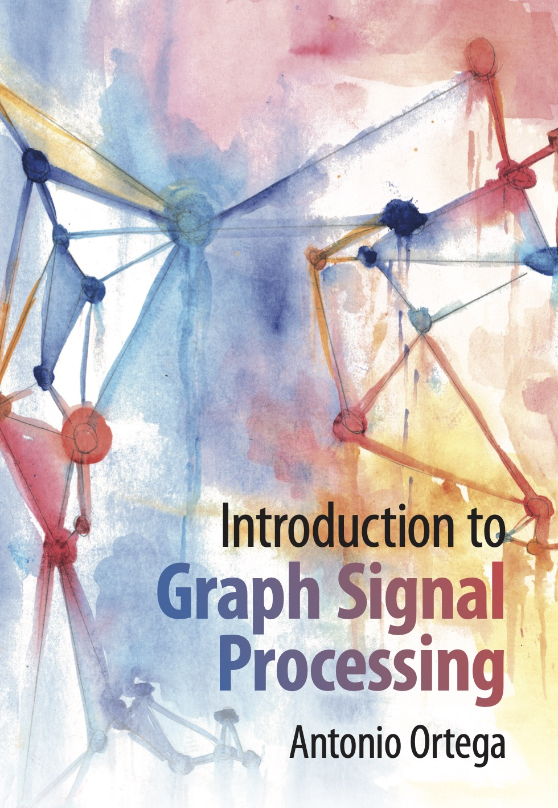

Antonio Ortega
Dean's Professor of Electrical and Computer Engineering
About
Antonio Ortega received his undergraduate and doctoral degrees from the Universidad Politecnica de Madrid, Madrid, Spain, and Columbia University, New York, NY, respectively. At Columbia, he was supported by a Fulbright Scholarship. In 1994, he joined the Electrical Engineering department at the University of Southern California (USC), where he is currently a Dean's Professor, has served as Associate Chair, and serves as Vice Dean for Faculty Affairs of the Viterbi School of Engineering (2026– ). He is a Fellow of the IEEE and EURASIP and a member of APSIPA. He was the Editor-in-Chief of the IEEE Transactions of Signal and Information Processing over Networks and currently serves as VP of Publications for the IEEE Signal Processing Society. He has received several paper awards, including the 2016 Signal Processing Magazine award. His recent research focuses on graph signal processing, machine learning, and multimedia compression. Over 50 PhD students have completed their PhD theses under his supervision, and his work has led to over 400 publications in international conferences and journals, as well as several patents. He is the author of the book, "Introduction to Graph Signal Processing," published by Cambridge University Press in 2022.
Administrative Roles
- Vice Dean for Faculty Affairs, Viterbi School of Engineering (2026– )
- Associate Chair, Dept. of EE, USC (2004–07, 2009–12)
- Director, Signal & Image Processing Institute, USC (2003–06)
Education
- Ph.D., Electrical Engineering, Columbia University, 1994 (Fulbright Scholar)
- Telecommunications Engineering, Universidad Politécnica de Madrid, 1989
International Collaborations
Visiting positions at 15+ institutions across Japan, Spain, France, Singapore, Switzerland, and Australia. Current collaborations include Télécom Paris, IMDEA Networks (Spain), Universidad Politécnica de Madrid (Spain), University of Osaka, Institute of Science Tokyo, York University (Canada) and Universidad Industrial de Santander (Colombia). 50+ PhD graduates working at universities and companies worldwide.
Research
Research interests span signal processing and machine learning, with a focus on graph signal processing and applications in various domains, and compression of images, video and 3D visual data.
Graph Signal Processing
Early contributions to GSP — sampling theory, filter banks, graph wavelets, graph Fourier transforms (GFTs), and graph learning. Spectral analysis for directed graphs and fast GFTs.
Image & Video Compression
Rate-distortion optimization, graph-based transforms for video coding, content-adaptive transforms, image coding for machines, and UGC compression with denoised references.
Machine Learning on Graphs
Graph-based semi-supervised learning, active learning, deep neural network analysis using graph tools, non-negative kernel regression, and out-of-distribution detection.
3D Point Cloud & Gaussian Splatting
Point cloud attribute compression, denoising, quality assessment, 3D Gaussian splatting data coding, volumetric video conferencing, and dynamic polygon clouds for VR/AR.
Sensor Networks & Remote Sensing
Distributed data compression, graph-based wavelets for sensor webs, soil moisture downscaling, satellite image fusion, and efficient data gathering.
Oilfield & Industrial Applications
Waterflood tomography, reservoir characterization, upscaling of geological models using graph wavelets, anomaly detection for sensor drift, and fault detection using GSP.
Book

Author: Antonio Ortega
Publisher: Cambridge University Press, 2022
Covers graph theory foundations, graph Fourier transform, sampling on graphs, graph filter banks, graph wavelets, graph learning, and applications in compression, ML, and networks.
Publications
Full list on Google Scholar and DBLP. The recent list below is generated automatically from OpenAlex.
Awards & Honors
- 2023USC Senior Research Award, USC School of Engineering
- 2022Dean's Professor, Dept. of ECE, University of Southern California
- 2018Fellow, EURASIP — for contributions to image/video compression and graph signal processing
- 2014JSPS Fellowship, Japan Society for Promotion of Science
- 2010–11IEEE SPS Distinguished Lecturer
- 2007Fellow, IEEE — for contributions to image and video communications
- 2007Cheng Tsang Man Chair Professor, Nanyang Technological University, Singapore
- 2007JSPS Fellowship, Japan Society for Promotion of Science
- 2002Okawa Foundation Research Grant
- 1997Northrop-Grumman Junior Research Award, USC School of Engineering
- 1995NSF CAREER Award — Adaptive Compression Techniques for Digital Video Communications
- 1990Fulbright Doctoral Scholarship — Columbia University
Editorial & Professional Service
Editorial Roles
- Editor-in-Chief, IEEE Trans. on Signal and Information Processing over Networks (2019–2021)
- Inaugural Editor-in-Chief, APSIPA Transactions on Signal and Information Processing (2011–2018)
- Senior Area Editor, IEEE Trans. Image Processing (2015–2019)
- Associate Editor, IEEE Trans. Signal Processing (2014–2017)
- Associate Editor, IEEE Trans. Signal & Info. Processing over Networks (2014–2018)
- Area Editor, IEEE Signal Processing Magazine (2009–2011)
- Associate Editor, IEEE Trans. Image Processing (2007–2010, 1996–2000)
- Associate Editor, IEEE Signal Processing Letters (2000–2002)
- Moderator, arXiv EESS.IV (2018–present)
- Guest editor for special issues in Proc. IEEE, IEEE JSTSP, IEEE TMM, EURASIP JASP
Governance & Committees
- VP Publications, IEEE Signal Processing Society (2024–2026)
- Board of Governors, IEEE SPS (2002, 2017–2019)
- Chair, IEEE SPS SIG on Big Data (2014–2015)
- Member, IEEE SPS Technical Directions Board (2014–2016)
- Fellow Reference Committee, IEEE SPS (2014–2016)
- Chair, IMDSP Technical Committee (2004–2005)
- Member, National Academy Roundtable on Data Science Education (2016–2019)
- Member, APSIPA Sadaoki Furui Prize Paper Award Committee
- Member, IEEE SPS Conference Board (1997–1999, 2005–2007)
Conference Leadership
- General Co-Chair, Picture Coding Symposium (PCS 2022)
- TPC Co-Chair, IEEE Data Science Workshop 2018
- TPC Co-Chair, PCS 2018, San Francisco
- General Chair, GlobalSIP Symposium on GSP 2013
- General Co-Chair, APSIPA ASC 2013, Hollywood
- Program Co-Chair, PCS 2013, San Jose
- TPC Co-Chair, Packet Video Workshop 2010
- TPC Co-Chair, ICIP 2008, San Diego
- TPC Co-Chair, ICME 2002, Lausanne
- TPC Co-Chair, MMSP 1998
Plenary & Keynote Talks
- 2026 — Plenary, ICME, Bangkok
- 2026 — Keynote, GSP Workshop, Madrid
- 2021 — Plenary, EUSIPCO, Dublin
- 2017 — Plenary, CAMSAP, Curaçao
- 2016 — Keynote, GlobalSIP, Washington DC
- 2015 — Plenary, APSIPA, Hong Kong
- 2013 — Plenary, IEEE ICIP, Melbourne
- 2012 — Keynote, SPIE VICP, San Francisco
- 2007 — Keynote, PCSJ/IMPS, Japan
- 1999 — Keynote, ISMIP, Taipei
STAC Lab
Signal, Transform, and Compression Lab at USC. Website: sipi.usc.edu/~ortega/ · GitHub: github.com/STAC-USC
Research Associate
- Dr Eduardo Pavez (since 2024)
Current PhD Students
- Yeganeh Gharedaghi (since 2024)
- Mansooreh Montazerin (since 2023)
- Samuel Fernández Menduiña (since 2022)
- Darukeesan Pakiyarajah (since 2022)
- Xin Xiong (since 2021)
- Ecem Bozkurt (since 2021)
- Haoran Hong (since 2021)
Current & Former Postdocs
- Dr. Semin Kwak (2023–2024) → Sony, Zurich
- Dr. Eduardo Pavez (2019–2024)
- Prof. Basak Guler (2016–2020) → UC Riverside
- Prof. Benjamin Girault (2016–2020) → INRIA, France
- Dr. Sunil K. Narang (2012–2013) → Meta
- Prof. Kazuma Shinoda (2011–2012) → Utsunomiya University
Selected PhD Alumni (50+ total)
- 2026Dr. Johanna Garcia Cardona--
- 2026Dr. Wen-Yang Lu--
- 2026Dr. Shashank N. SridharaDolby, Atlanta
- 2023Dr. Pratyusha DasAmazon, Seattle
- 2023Dr. Sarath ShekkizharSalesforce, San Francisco
- 2023Dr. Ajinkya JayawantMatic Robots, Mountain View
- 2020Dr. Keng-Shih LuGoogle, Mountain View
- 2019Dr. Eduardo PavezUSC (Postdoc)
- 2019Dr. Jiun-Yu KaoAmazon, San Francisco
- 2017Dr. Aamir AnisGoogle, Mountain View
- 2017Dr. Yung-Hsuan ChaoApple, Cupertino
- 2017Dr. Hilmi EgilmezApple, Cupertino
- 2017Dr. Akshay GaddeGoogle, Mountain View
- 2013Dr. Jason TokayerLenna, Florida
- 2013Dr. Yenting (Greg) LinGoogle, Los Angeles, CA
- 2013Dr. Sungwon LeeSamsung Electronics, Seoul, South Korea
- 2012Dr. Sunil K. NarangMeta, Seattle
- 2011Dr. Woo-Shik KimSamsung Electronics, Korea
- 2011Dr. Hye-Yeon CheongApple, Cupertino, CA
- 2011Dr. Zihong FanVideo Slick, CA
- 2010Dr. Godwin ShenNASA-JPL, Pasadena
- 2010Dr. Kun-Han LeeiQIYU.com, Redmond, WA
- 2009Dr. Brent McClearyRaytheon, Chino Hills, CA
- 2009Prof. Roger Pique-RegiWayne State University
- 2009Dr. Insuk ChongGoogle, Mountain View, CA
- 2008Dr. Po-lin LaiTechStream, San Jose, CA
- 2008Prof. Ngai-Man CheungSUTD, Singapore
- 2008Dr. Jae Hoon KimApple, Cupertino, CA
- 2008Dr. Huisheng WangGoogle, Mountain View, CA
- 2007Prof. Yoon Hak KimChosun University, Korea
- 2006Dr. Alexandre G. CiancioINPI, Brazil
- 2005Dr. Hyukjune ChungSamsung, South Korea
- 2004Dr. Hua XieNASA-JPL, Pasadena, CA
- 2003Dr. Sangyong LeeLGE, Seoul, South Korea
- 2002Prof. Baltasar Beferull-LozanoSimula, Oslo, Norway
- 2002Prof. Wendi PanUniversity of Alabama, Huntsville
- 2002Dr. Zhourong MiaoMeta, Menlo Park, CA
- 2001Prof. Raghavendra SinghBITS-Pilani, Rajasthan, India
- 1999Prof. Woontack WooKAIST, South Korea
- 1999Prof. Krisda LengwehasatitSrinakharinwirot University, Thailand
- 1999Wenqing JiangTikTok, San Jose, CA
- 1998Dr. Christos ChrysafisApple, Cupertino
- 1998Dr. Chi-Yuan HsuBroadcom, San Jose, CA
- 1998Dr. Youngjun YooNVIDIA, Dallas, TX
Courses
Graduate and undergraduate courses taught in the USC Department of Electrical and Computer Engineering.
- EE 596Wavelets and Graphs — wavelet transforms, multiresolution analysis, filter banks, graph signal processing, and applications in signal and image processing.
- EE 460Introduction to Machine Learning — fundamentals of machine learning, including supervised and unsupervised learning, neural networks, and deep learning.
- EE 141Applied Linear Algebra for Engineering — Introduction to linear algebra and its applications in engineering problems.
Research Funding
Research supported by government agencies and industry partners, including:
- NSF
- DARPA
- NASA
- DOE
- YouTube
- Meta
- Samsung
- Qualcomm
- Mitsubishi Electric
- Chevron
- Intel
- Texas Instruments
- LGE
- Hewlett-Packard
Contact
- Emailaortega at usc.edu
- OfficeEEB 436, USC Viterbi School of Engineering
- Phone+1-213-740-2320
- AddressDept. of ECE, University of Southern California, Los Angeles, CA 90089-2564, USA